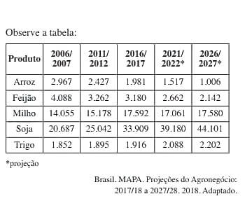
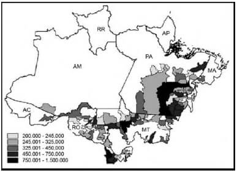

Conteúdo: Colocar o conteúdo aqui
Objetivo: Colocar o objetivo aqui
Questão 01
(ETC 2020) A atividade pecuária possui grande representatividade na economia brasileira. Não é novidade que o Brasil possui um dos maiores rebanhos comerciais de bovinos do mundo. Essa atividade gera milhões de empregos diretos e indiretos, e 20% do território nacional é ocupado com pastagens que são destinadas à criação do gado.
https://tinyurl.com. Adaptado
Assim como na agricultura, a atividade pecuária se diferencia em extensiva e intensiva.
A pecuária intensiva é um sistema
a) tradicional de produção, em que os animais são criados em grandes áreas, o qual emprega técnicas arcaicas com objetivo de manter a produtividade.
b) tradicional de produção, em que predomina a utilização dos nutrientes do pasto como fonte de alimentos para os animais e utilização mínima de água.
c) tradicional de produção, em que, nos períodos mais secos, complementa-se a alimentação dos rebanhos com cactáceas, como a palma e proteinados de baixo custo.
d) moderno de produção, em que ocorrem investimentos em técnicas avançadas aplicadas nos rebanhos, tais como melhoramento genético e inseminação artifi.
e) moderno de produção, em que os animais são criados soltos e, como forma de suplementação, é feito o fornecimento de sal comum e de sal mineral aos rebanhos.
Comentário:
Colocar os comentários aqui.
Questão 02
(FUVEST 2019 2ª fase)

a) Descreva a situação atual e a tendência futura da área plantada de grãos no Brasil.
b) Há uma correlação entre a atual configuração da produção agrícola e a estrutura fundiária brasileira? Justifique sua resposta.
c) Considerando os dados da tabela e os vetores de expansão do cultivo de soja no território brasileiro na última década, aponte duas possíveis consequências deste processo, sendo uma ambiental e outra social.
Compare sua resposta com o comentário abaixo:
a) a tendência apresentada na tabela destaca o aumento da área de plantio de commodities como a soja e o milho e diminuição das áreas de lavouras para alimentação popular como o arroz e feijão.
b) Sim, o avanço do agronegócio que produz sobretudo a commodities se caracteriza por uma estrutura fundiária grande, provocando uma especulação imobiliária na área rural e uma disputa por terras no Brasil.
c) Uma consequência ambiental do aumento da expansão da soja pode ser destacada o aumento do desmatamento na Amazônia e no Cerrado da chamada Fronteira Agrícola, bem como, da diminuição da biodiversidade, aumento do consumo de água e entre outros. Quanto a consequência social pode-se destacar o aumento da concentração de terras, diminuição da oferta de trabalho no campo (decorrente do aumento da mecanização), aumento da insegurança alimentar e subnutrição e entre outros.
Questão 03
(UNB 2019) A fronteira agrícola no Brasil vem se expandindo ao longo das quatro últimas décadas, principalmente pelo intensivo investimento em conhecimento e tecnologia. Embora esse crescimento seja significativo, há uma enorme concentração produtiva. É nítido que há uma expansão da produção em direção ao cerrado brasileiro, com a incorporação do Matopiba (Maranhão, Tocantins, Piauí e Bahia), notadamente na produção de grãos. Há também uma intensificação da atividade pecuária em regiões tradicionais - no Sul do país, seja na suinocultura, seja na avicultura - com a inclusão das regiões limítrofes do Centro-Oeste e do Pará, com a bovinocultura.
Internet: www.ipea.gov.br (com adaptações).
Tendo o texto apresentado como referência inicial, julgue o item que se segue.
No norte do Mato Grosso, uma das regiões de expansão da fronteira agrícola, as cidades e suas funcionalidades (lojas de máquinas agrícolas e de insumos, bancos, cooperativas, empresas de armazenagem, consultorias, construtoras, imobiliárias, indústrias, empresas de aviação agrícola) evidenciam a articulação territorial entre produção agropecuária e serviços urbanos.
a) Certo.
b) Errado.
Questão 04
(UEA 2019) Principal grão do Brasil, foi introduzido no país em 1914. A partir da década de 1970, o setor registrou alto crescimento graças à migração de produtores do Sul, com o desenvolvimento de novas técnicas de cultivo e do uso de pesticidas. “Os preços aumentavam e os produtores do Sul não tinham terra suficiente para desenvolver. Muitos se instalaram no Cerrado, onde transformaram terras baratas, que eram inóspitas para o plantio da oleaginosa”, disse Amélio Dall’Agnol, da Embrapa.
(Www.afp.com, 15.06.2019. Adaptado.)
O grão e a região brasileira que abrigou a sua primeira frente de expansão são:
a) a soja e o Sudeste.
b) o milho e o Sudeste.
c) o milho e o Centro-Oeste.
d) a soja e o Centro-Oeste.
e) a soja e o Norte.
Questão 05
(IFPR 2018) Na atual conjuntura do Sistema de produção agrícola do Brasil, existem importantes diferenças entre o agronegócio e a agricultura familiar, no conceito e na forma de utilização das terras. Assinale a alternativa que contém apenas elementos do agronegócio.
a) Intensa especulação imobiliária e produção intensa de hortifrutigranjeiros.
b) Extensas monoculturas de produtos para exportação fortemente mecanizadas.
c) Uso de pequenas propriedades unidas em um sistema de cooperativismo. c) Uso de pequenas propriedades unidas em um sistema de cooperativismo.
d) Grande diversidade de produtos agrícolas e pecuários em sistema intensivo.d) Grande diversidade de produtos agrícolas e pecuários em sistema intensivo.
Questão 06
(FMC 2018) Analise o texto a seguir:
As florestas são fundamentais para a manutenção das chuvas e o fluxo e a qualidade da água, a biodiversidade e a reciclagem de carbono e nutrientes. A atividade agropecuária, por sua vez, é fundamental tanto para a produção de alimentos quanto pela contribuição para a economia, em especial nas exportações. Não podemos viver sem um ou outro. Atualmente, a agropecuária parasita as florestas e a vegetação nativa no Brasil.
AZEVEDO, T. Moratória. O Globo, 25 abr. 2018, p. 17.
No texto, é sinalizado o seguinte problema socioambiental:
a) Lixiviação dos solos devido ao fluxo da água .
b) Desmatamento devido ao avanço da agropecuária.
c) Redução das chuvas devido ao aquecimento global .
d) Redução da biodiversidade devido à reciclagem do carbono .
e) Queda da produção de alimentos devido à crise agropecuária.
Questão 07
(IFPR 2017) O agronegócio no Brasil movimenta mais de 450 bilhões de reais e detém a maior parcela dos produtos nacionais exportados. A respeito dos sistemas de produção e dos processos agrícolas em curso, assinale a alternativa correta.
a) A agricultura empresarial tem menor número de estabelecimentos mas ocupa a maior área de produção; apesar de ocupar área menor, as unidades familiares são mais eficientes na produção de alimentos para o mercado interno.
b) Não há mais espaços que possam conter culturas de exportação como soja e cana nas regiões Norte e Nordeste do país. Em função disso apenas pequenas e médias propriedades podem ocupar aquelas regiões.
c) A expansão da produção de soja em grandes latifúndios do Centro-Oeste, é feita em regime de plantation com mão de obra numerosa e sem qualificação e sistemas extensivos de baixa tecnologia.
d) No Paraná predomina a agricultura extensiva de monoculturas em grandes propriedades; no resto do mundo é um processo conhecido como agricultura orgânica ou sustentável.
Questão 08
(ENEM 2010) O mapa mostra a distribuição de bovinos no bioma amazônico, cuja ocupação foi responsável pelo desmatamento de significativas extensões de terra na região. Verifica-se que existem municípios com grande contingente de bovinos, nas áreas mais escuras do mapa, entre 750 001 e 1 500 000 cabeças de bovinos.
Produção de Bovinos - Efetivos de Cabeças em 2004 no Bioma Amazônico segundo município:

Disponível em: www.ibge.gov.br. Acesso em: 05 jul. 2008.
A análise do mapa permite concluir que :
a) os estados do Pará, Mato Grosso e Rondônia detêm a maior parte de bovinos em relação ao bioma amazônico.
b) os municípios de maior extensão são responsáveis pela maior produção de bovinos, segundo mostra a legenda.
c) a criação de bovinos é a atividade econômica principal nos municípios mostrados no mapa.
d) o efetivo de cabeças de bovinos se distribui amplamente pelo bioma amazônico.
e) as terras florestadas são as áreas mais favoráveis ao desenvolvimento da criação de bovinos.
Questão 09
(ENEM 2010) "Antes, eram apenas as grandes cidades que se apresentavam como o império da técnica, objeto de modificações, suspensões, acréscimos, cada vez mais sofisticadas e carregadas de artifício. Esse mundo artificial inclui, hoje, o mundo rural".
SANTOS, M. A Natureza do Espaço. São Paulo: Hucitec, 1996.
Considerando a transformação mencionada no texto, uma consequência socioespacial que caracteriza o atual mundo rural brasileiro é
a) a redução do processo de concentração de terras.
b) o aumento do aproveitamento de solos menos férteis.
c) a ampliação do isolamento do espaço rural.
d) a estagnação da fronteira agrícola do país.
e) a diminuição do nível de emprego formal.
Questão 10
(PUC-PR 2010) O Brasil dispõe de um território fisiograficamente diferenciado, com uma grande variedade de sistemas naturais que foram moldados para a ocupação e utilização comercial e industrial em benefício do homem.
Dado esse contexto, considere as assertivas abaixo e marque a alternativa CORRETA:
I. A conquista da terra por atividades econômicas modernas mostra a escolha, em cada momento, de áreas diversas de implantação; de início é sobretudo o litoral brasileiro que é ocupado.
II. A formação socioterritorial brasileira constitui-se a partir das heranças de ocupação e das lógicas econômicas, demográficas e políticas da contemporaneidade.
III. A tendência no século XX de afirmação de uma dinâmica industrial brasileira não se difundiu em relação direta ao tamanho da população concentrada em estados como Bahia e Rio Grande do Sul.
IV. Pode-se dizer que na Região Concentrada há maior mobilidade e integração econômica, dificilmente difundida pelo restante do território. Essa região pode ser considerada o embrião da polarização encontrada no sudeste, que assegura a São Paulo um papel inconteste de metrópole econômica do País.
a) Apenas a assertivas I e III estão corretas.a
b) Apenas as assertivas II e IV estão corretas.
c) Apenas a assertiva I está correta.
d) Todas as assertivas estão corretas.
e) Apenas as assertiva I, II e IV estão corretas.